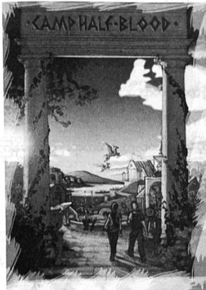

ခေတ္တ နှုတ်ဆက်ခွဲခွာခြင်း
ထိုနှစ် နွေရာသီက သင်တန်းမှာ နောက်ကျမှ ပြီးစီးခဲ့သည်။ ပုံမှန်ထက် နှစ်ပတ် ပိုကြာခဲ့ပြီး ကျောင်းဖွင့်ခါနီး အချိန်ထိ ရောက်သွားခဲ့ကာ ပါစီ့ တစ်သက်တာတွင် အကောင်းဆုံးအချိန် နှစ်ပတ် ဖြစ်လာခဲ့သည်။ ထိုသို့ မပြော လျှင်လည်း အန်နာဘတ် လက်ချက်နှင့် အသက် ထွက်သွားနိုင်၏။
အခြား စိတ်ဝင်စားစရာ ကိစ္စများလည်း ဖြစ်ခဲ့ပြီး ဂရိုဗာမှာ ဆေတာများကို ကမ္ဘာအနှံ့ စေလွှတ်၍ မိဘ မသိ သေးသည့် နတ်သွေးနှောသူများကို စတင်ရှာဖွေခဲ့သည်။ ယခုအချိန်ထိ နတ်ဘုရားများမှာ ကတိတည်ဆဲဖြစ်ပြီး နတ်သွေး နှောသော ကလေးများ တစ်ယောက်ပြီးတစ်ယောက် အသစ် ရောက်လာနေကြသည်။ အမေရိက တစ်နိုင်ငံတည်းမှ မဟုတ်ဘဲ တခြားနိုင်ငံများမှလည်း ရောက်လာကြ၏။
“ပြောရရင် မနိုင်ချင်တော့ဘူး …”
ကနူးလှေကန်နားတွင် အနားယူကာ ထိုင်နေသည့် နေ့လယ်တစ်ခုတွင် ဂရိုဗာ က ဝန်ခံလိုက်သည်။
“ခရီးသွားဖို့ ဘတ်ဂျက်လည်း ဒီ့ထက် ပိုလိုမယ်… ဆေတာ အင်အားလည်း တစ်ရာ ရာလောက်ကို ပိုလိုလိမ့်မယ် …”
“မင်းမှာရှိတဲ့ ဆေတာတွေလည်း မတရား ကြိုးစားနေကြတာပဲ … ငါ ထင်တာတော့ မင်းကို ကြောက်ကြပုံပဲ”
ဂရိုဗာ့ မျက်နှာ နီသွားရင်း ……
“ကြံကြံဖန်ဖန်ကွာ … ငါက ကြောက်စရာ မကောင်းပါဘူး”
“မင်းက တောရိုင်းမြေ အရှင်သခင်လေကွာ … ပန်ရဲ့ ကိုယ်စားလှယ် … ကလိုဗန်ကောင်စီရဲ့ ……”
“တော်တော့ … မင်းလည်း ဂျူနီပါလိုပဲ … သူ့ကြည့်ရတာ ငါ့ကို သမ္မတပါ ဝင်ရွေးခိုင်းချင်တဲ့ပုံမျိုး …”
ဆောက်လုပ်ဆဲ အဆောင်များဘေးမှ ဖြတ်လျှောက်လာစဉ် ဂရိုဗာက သံဗူးတစ်ဘူးကို ကိုက်ဝါးလာ၏။ ယခင်က “U” ပုံသဏ္ဌာန်ရှိခဲ့သော အဆောင်များမှာ မကြာမီ လေးထောင့်စပ်စပ် အနေအထား ဖြစ်လာပေလိမ့်မည်။ နတ်သွေးနှော သူ အားလုံးမှာ တာဝန်များကို တက်တက်ကြွကြွ ဆောင်ရွက်လျက်ရှိကြသည်။
ဟေးဒီးစ်အဆောင်ကို နီကိုက အရိုးစုများနှင့် ဆောက်လုပ်နေပြီး၊ ပြီးစီးချိန်တွင် သူတစ်ယောက်တည်းသာ နေရမည် ဖြစ်သည်။ ပြောင်လက်နေသော မီးတောင်ကျောက်တစ်မျိုးဖြင့် တည်ဆောက်ထားပြီး တံခါးဝတွင် အရိုးခေါင်းပုံ ရှိကာ နှစ်ဆယ့်လေးနာရီမပြတ် အစိမ်းရောင်မီးများ တောက်နေသော မီးတုတ်များ ရှိကြသည်။
ထို့နောက် အိုင်းရစ်၊ နန်းမစစ်၊ ဟီကိတ်နှင့် ပါစီပင် နာမည် မကြားဖူးသော အခြားနတ်များစွာ၏ အဆောင်များ ဆောက်လုပ်လျက် ရှိသည်။ နေ့တိုင်းလိုလို အဆောင်သစ်တစ်ခု တိုးနေပြီး အလွန်အောင်မြင်သဖြင့် အဆောင်သစ်များ အတွက် နေရာ အသစ်တစ်ခုပေးရန် အန်နာဘတ်နှင့် ခိုင်ရွန်တို့ တိုင်ပင်နေကြပြီ ဖြစ်သည်။
ယခုအခါ ဟားမီးစ် အဆောင်တစ်ခုလုံးမှာ ချောင်ချောင်ချိချိ ဖြစ်သွားပြီး မိဘမသိသော ကလေးအများစုမှာ သိသွားကြပြီ ဖြစ်သည်။ ညတိုင်းလိုလို နတ်များထံမှ အမှတ်တံဆိပ်ကို မြင်ကြရပြီး ညတိုင်းလိုလို ဆေတာများကလည်း နတ်သွေးနှောသူများကို သင်တန်းဆီ ခေါ်ဆောင်လာနေကြသည်။ အများစုမှာ နောက်မှ မိစ္ဆာများ လိုက်လာခြင်းကို ခံကြရ သော်လည်း အားလုံးလိုလို အန္တရာယ်ကင်းကင်းနှင့် သင်တန်းဆီ ရောက်လာနိုင်သည်က များ၏။
“နောက်နှစ် နွေရာသီဆို ပိုဆိုးလိမ့်မယ် … နောက်နှစ်ဆို သင်တန်းသား နှစ်ဆရှိမယ်လို့ ခိုင်ရွန်က ခန့်မှန်း နေတယ်”
ပါစီ့ စကားကို ဂရိုဗာက ထောက်ခံ၏။
“အင်း … ဟုတ်တယ် … ဒါပေမဲ့ ငါတို့ သင်တန်းက သင်တန်းပါပဲ”
ဂရိုဗာမှာ ကျေနပ်နေပုံရ၏။
တိုင်ဆန်မှာ ဆိုက်ကလော့တို့ကို ဦးဆောင်ကာ ဆောက်လုပ်ရေး လုပ်ပေးပြီး ဧရာမ ကျောက်တုံးကြီးများကို သယ်ယူကာ ဟီကိတ် အဆောင် ဆောက်လုပ်နေကြသည်။ ကျောက်တုံးတိုင်းတွင် မှော်ပညာဖြင့် စာများ ရေးထွင်းထားပြီး လက်ထဲမှ လွတ်ကျပါက ပေါက်ကွဲလျှင် ပေါက်ကွဲ သို့မဟုတ်ပါကလည်း မိုင်ဝက်ခန့် အကွာအဝေးတွင်းရှိ ရှိသမျှသူများ အားလုံးကို သစ်ပင်များအဖြစ် ပြောင်းလဲသွားနိုင်၏။ ထိုသို့ ဖြစ်သွားလျှင် ပျော်မည့်သူ ဆို၍ ဂရိုဗာ တစ်ယောက်သာ ရှိသည်။
“ငါ ခရီးတွေ အများကြီး သွားဖြစ်လိမ့်မယ်… သဘာဝ ပတ်ဝန်းကျင်ကို ထိန်းသိမ်းရမှာနဲ့ … နတ်သွေးနှောတဲ့ ကလေးတွေကို ရှာရတာနဲ့ … မင်းနဲ့ များများတွေ့ ဖြစ်မယ် မထင်ဘူး ….”
“အဲဒါဘာဖြစ်လဲ … မင်းက ငါ့အခင်ဆုံး သူငယ်ချင်းက အခင်ဆုံး သူငယ်ချင်းပဲ ...”
ဂရိုဗာက ပြုံးရင်း …
“အန်နာဘတ်က သူငယ်ချင်း မဟုတ်တော့ဘူး မဟုတ်လား”
“မတူဘူးလေ …”
“အေးပါ … ဟုတ်ပါပြီ”
♦️🌟♦️
နေ့လယ်ခင်းတွင် ကမ်းခြေ၌ နောက်ဆုံးအဖြစ် လမ်းလျှောက်နေစဉ် ရင်းနှီးလှသော အသံတစ်သံကို ကြားရ သည်။
“ငါးဖမ်းလို့ ကောင်းတဲ့ရာသီဥတုပဲ …”
ရေလှိုင်းထဲတွင် ဒူးခန့်နက်သော နေရာ၌ ရပ်နေသော ပိုဆိုက်ဒွန်ကို တွေ့ရပြီး ဘောင်းဘီတို၊ ဦးထုပ် အဟောင်းနှင့် တော်မီ ဘဟားမား ရှပ်အင်္ကျီတို့ကို ဝတ်ထားသည်။ ငါးမျှားတံမှ ကြိုးကို ပစ်လိုက်လျှင် ပုံမှန်မဟုတ်ဘဲ ပင်လယ်နက်ထဲထိ ကြိုးက ရောက်သွားကြောင်း တွေ့ရသည်။
“အဖေ … ဒီကို ဘာလာလုပ်တာလဲ …”
ပိုဆိုက်ဒွန်က မျက်စိတစ်ဖက် မှိတ်ပြရင်း …
“အိုလံပတ်စ်မှာက အေးအေးဆေးဆေးမှ စကား ပြောမရတာကွာ … သားကို ကျေးဇူးတင်စကား ပြောချင်တာ…”
“ဘယ်လို … လာကယ်တဲ့သူက အဖေလေ …”
“ဟုတ်တယ် … နန်းတော် တစ်ခုလုံးတော့ ရစရာ မရှိဘူး … ဒါပေမဲ့ နန်းတော်က ပြန်ဆောက်လို့ ရပါတယ် … အဖေ့ဆီကို ကျေးဇူးတင်ကြောင်း ကတ်တွေ ပို့ကြတဲ့ နတ်တွေ မနည်းဘူး … အေးရီးစ်ဆီကတောင် တစ်ကတ် ရသေးတယ် … ကြည့်ရတာတော့ ဟီရာ အတင်းခိုင်းလို့ပဲ နေမယ် … ဘယ်လိုပဲဖြစ်ဖြစ် ကျေနပ်စရာပဲ … ဒီတော့ သားကို ပဲ ကျေးဇူးတင်ရမယ် … နတ်ဘုရားတစ်ပါး အနေနဲ့တောင် သင်ယူစရာတွေက မကုန်နိုင်ဘူးပဲ …”
ရုတ်တရက် ရေများ ပွက်ထလာပြီး ပိုဆိုက်ဒွန်၏ ငါးမျှားတံတွင် အလွန် ကြီးမားလှသော အစိမ်းရောင် ပင်လယ် မြွေကြီး မိနေ၏။ အတင်း ရုန်းကန်နေသော်လည်း ပိုဆိုက်ဒွန်က လက်တစ်ဖက်ဖြင့်သာ ငါးမျှားတံကို ထိန်းထားရင်း သက်ပြင်း ချလိုက်သည်။ ထို့နောက် ကြိုးကို ဓားဖြင့်ဖြတ်ကာ လွှတ်ပေးလိုက်လျှင် မြွေကြီး ရေအောက်သို့ ဝင်ရောက် ပျောက်ကွယ်သွားသည်။
“သေးလွန်းနေတယ် … စားလို့ရတဲ့ အရွယ် မဟုတ်ဘူး … သေးသေးလေးတွေကို သွားစားမိရင် သဘာဝ ပတ်ဝန်းကျင် ထိန်းသိမ်းရေးက ငါ့ကို ပြဿနာ ရှာလိမ့်မယ် …”
“သေးလွန်းတယ် … ဟုတ်လား”
ပိုဆိုက်ဒွန်က ပြုံးရင်း …
“အဆောင်သစ်တွေ ဆောက်တာ ကောင်းတယ် … ဒါနဲ့ နောက်နှစ် နွေကျရင် သားရဲ့ ညီအစ်ကို မောင်နှမတွေ အများကြီး အဖေ လွှတ်ပေးလိုက်လို့ရပြီပဲ …”
ပိုဆိုက်ဒွန်က ရယ်ရင်းနှင့် ငါးမျှားတံကို ပြန်သိမ်းနေ၏။
“အဲ … အဖေ နောက်နေတာ မဟုတ်လား …”
ပိုဆိုက်ဒွန် မျက်စိတစ်ဖက် မှိတ်ပြသော်လည်း တကယ်လား၊ နောက်သလား၊ ပါစီ ဝေခွဲမရ။
“တွေ့ကြသေးတာပေါ့ ပါစီ… ငါးဖမ်းမယ်ဆို လုံလုံလောက်လောက် ကြီးရဲ့လား အရင်စဉ်းစား … ဟုတ်ပြီလား …”
ထို့နောက် ပိုဆိုက်ဒွန် ပျောက်ကွယ်သွားပြီး သဲသောင်ပြင်ပေါ်၌ ငါးမျှားတံ တစ်ချောင်းသာ ကျန်ရစ်သည်။
ထိုနေ့ညမှာ သင်တန်း နောက်ဆုံးညဖြစ်ပြီး ပုတီးစေ့တစ်စေ့ ထပ်ရမည့်ညလည်း ဖြစ်သည်။ ယခုနှစ်အတွက် ပုတီးစေ့ကို ဟတ်ဖီးယားတပ်စ် အဆောင်မှ ဒီဇိုင်းလုပ်ပြီး အင်ပါယာစတိတ် အဆောက်အအုံပုံနှင့် ဂရိစာ သေးသေးလေး များစွာကို ပုတီးစေ့ပတ်ပတ်လည် ထွင်းထုထားသည်။ ထိုစာများမှာ အိုလံပတ်စ်ကို ကာကွယ်ရင်း ကျဆုံးခဲ့သော သူရဲကောင်း အားလုံး၏ အမည်များ ဖြစ်ကြသည်။ နာမည်များ များလွန်းသော ထိုပုတီးစေ့ကို ဆွဲထားရသည့်အတွက် ပါစီ ဂုဏ်ယူမိသည်။ ပုတီးစေ့လေးစေ့ကို ကြည့်ရင်း သင်တန်းတွင် ဝါရင့်လာပြီဟု ခံစားရ၏။ သင်တန်းသို့ ရောက်ခါစက ပါစီ့အသက် ဆယ့်နှစ်နှစ်သာရှိသေးပြီး ယခုအခါ သင်တန်းမှာ ပါစီ့အတွက် အိမ်ကဲ့သို့ ဖြစ်နေပေပြီ။
ခိုင်ရွန်မှာ ဒဏ်ရာများ လျင်လျင်မြန်မြန် ပျောက်ကင်းလာသော်လည်း ယခု အချိန်ထိ ထော့နင်းထော့နင်း သွားနေ ရဆဲပင်။
“ဒီနွေရာသီကို မမေ့ကြပါနဲ့ … ဒီနွေမှာ ရဲရင့်မှု၊ သတ္တိနဲ့ သစ္စာတရားကို ရှာဖွေ တွေ့ရှိခဲ့ကြတယ် … သင်တန်းရဲ့ ဂုဏ်သိက္ခာကို ထိန်းသိမ်းကြ …”
ပါစီ့ကို ခိုင်ရွန် ပြုံးပြလိုက်သည်။ အားလုံး အော်ဟစ်နေကြ၏။ မီးပုံကို ကြည့်လိုက်လျှင် အညိုရောင် ဝတ်ရုံနှင့် မီးပုံကို ပြုပြင်ပေးနေသော ကလေးမလေးကို တွေ့ရသည်။ ပါစီ့ကို နီရဲနေသော မျက်လုံးများနှင့် မျက်စိမှိတ်ပြ၏။ သူမကို မည်သူမျှ မြင်ပုံမရ။ ထိုသို့ပင် နေချင်ပုံရသည်ဟု ပါစီ တွေးနေမိသည်။
“ကဲ … အိပ်ရာ စောစောဝင်ကြ… မနက်ဖြန်နေ့လယ်ဆို အဆောင်က ထွက်ရမယ် … မဟုတ်ရင် ဒီမှာ တစ်နှစ်လုံး နေဖို့ စာရင်း ပေးထားရမယ် … စာရင်းထဲ မပါရင် သန့်ရှင်းရေး ဟားပီးစ်တွေက စားပစ်လိုက်လိမ့်မယ် … နွေရာသီကို ဝမ်းနည်းစရာနဲ့ အဆုံးမသတ်ချင်ဘူး …”
နောက်တစ်နေ့နံနက်တွင် သွေးနှောတောင်ကုန်းထိပ်၌ ပါစီနှင့် အန်နာဘတ်တို့ ရပ်နေကြသည်။ ဘတ်စ်ကားနှင့် ဗင်ကားများ အသီးသီး ထွက်သွားကြပြီး သင်တန်းသားများကို လူသားတို့ကမ္ဘာဆီ ပြန်လည် ခေါ်ဆောင်သွားကြ၏။ အချို့ သာ သင်တန်းတွင် နေခဲ့ကြပြီး လူသစ်အချို့လည်း တစ်နှစ်လုံးနေရန် စာရင်းပေး ထားကြသည်။ ပါစီမှာ ဂွတ်ဒီကျောင်းသို့ ပြန်တက်ရမည် ဖြစ်ပြီး သူ့တစ်သက်တွင် ပထမဆုံးအဖြစ် နှစ်နှစ်ဆက် တက်ရောက်ခွင့်ရသော ကျောင်းလည်း ဖြစ်သည်။
“သွားတော့မယ် …”
ကျောပိုးအိတ်လွယ်ရင်း ရေချယ်လ်က ပါစီတို့ကို နှုတ်ဆက်၏။ ကလာရီယွန် အကယ်ဒမီသို့ သွားမည်ဖြစ်ပြီး စိတ်လှုပ်ရှားနေပုံ ရသည်။ နောက်နှစ်နွေမှသာ ပါစီတို့၏ နတ်ဆရာမ ပြန်လာပေတော့မည်။ အန်နာဘတ်က ရေချယ်လ်ကို ပွေ့ဖက်နှုတ်ဆက်နေ၏။ သူတို့နှစ်ယောက် ဤရက်များအတွင်း တည့်နေကြသည်မှာ ရယ်စရာကောင်းလှသည်။
“နင် အဆင်ပြေမှာပါ …”
“ငါတော့ နည်းနည်း စိတ်ပူနေတယ် … စာမေးပွဲမှာ ဘာပါမလဲ လာမေးလို့ အခန်းထဲမှာ ငါ ထပြီး အနာဂတ် ဟောကိန်း ထုတ်မိရင် ဘယ်လိုလုပ်ကြမလဲ … ရှက်စရာကြီး …”
အန်နာဘတ် ရယ်လိုက်လျှင် ရေချယ်လ်လည်း ပြုံးနေ၏။
“ကဲ … နင်တို့ ကောင်းကောင်း နေကြနော် …”
ပါစီ့ကို ပြဿနာကောင်ဟူသော အကြည့်ဖြင့် ရေချယ်လ် ကြည့်လိုက်ပြီး ပါစီ ဘာမှမပြောနိုင်ခင် တောင်ကုန်း အောက်သို့ ပြေးဆင်းသွားတော့သည်။
အန်နာဘတ်မှာ နယူးယော့ခ်တွင် ဆက်နေရန် မိဘများထံမှ ခွင့်ပြုချက်ရ ထားပြီး အိုလံပတ်စ်နှင့် နီးမှသာ ဆောက်လုပ်ရေး လုပ်ငန်းများ ကြီးကြပ်နိုင်မည် ဖြစ်သည်။
“ငါနဲ့လည်း နီးနီးနေရတာပေါ့ …”
“နင်က အဲလောက်အရေးကြီးတယ် ထင်လို့လား”
ဟုဆိုသော်လည်း အန်နာဘတ်မှာ ပါစီ့လက်ကို မလွှတ်ဘဲ တင်းတင်း ဆုပ်ကိုင်ထားသည်။ အစပိုင်း အနေနှင့် သူတို့ အခြေအနေ မဆိုးလှဟု ပါစီ ထင်သည်။
ရွှေသိုးမွေး ချိတ်ထားသော ထင်းရှူးကိုင်းအောက်တွင် ပင်စည်ကို ပတ်လျက် နဂါး ပီလီးယပ်စ် စောင့်ကြပ်နေပြီး အိပ်ပျော်နေသဖြင့် ရေနွေးငွေ့များကို ဆက်တိုက်ဆိုသလို နှာခေါင်းမှ မှုတ်ထုတ်နေသည်။
“ရေချယ်လ်ရဲ့ ဟောကိန်းကို နင် စဉ်းစားနေတယ် မဟုတ်လား”
အန်နာဘတ်ကို ပါစီ မေးလိုက်သည်။
အန်နာဘတ် မျက်မှောင်ကုတ်သွားရင်း …
“နင်က ဘယ်လိုလုပ် သိတာလဲ …”
“နင့်ကို ငါ ကောင်းကောင်း သိတာပဲဟာ …”
ပါစီ့ပခုံးကို အန်နာဘတ်ပခုံးနှင့် ဝင်တိုက်လိုက်ရင်း …
“ဟုတ်တယ် … “နတ်သွေးနှောတဲ့သူ ခုနစ်ယောက်” ဆိုတာကို ငါ စဉ်းစားနေတာ… ဘယ်သူတွေများ ဖြစ်မလဲလို့ … နောက်နှစ် နွေရာသီမှာ သင်တန်းသား အသစ်တွေ အများကြီး ရောက်လာမှာလေ …”
“ဟုတ်တယ် … ကမ္ဘာကြီးပျက်မယ် ဆိုတာကရော ….”
“သေမင်းတံခါးလည်း ပါသေးတယ် … ရန်သူတွေလည်း ပါသေးတယ် ငါလည်း မပြောတတ်ဘူး… သေချာတာက ဒီဟောကိန်းကို ငါ သဘောမကျဘူး … ငါ ထင်တာက … ကဲပါလေ … ဘာပဲဖြစ်ဖြစ် ခုတော့ အေးအေးချမ်းချမ်း နေရဦး မှာပါ …”
“အေးချမ်းနေရင် သွေးနှောသင်တန်း ဘယ်ဟုတ်ပါ့မလဲ”
“အင်း … နင် ပြောသလိုပဲ ဖြစ်လိမ့်မယ် … ဒါမှမဟုတ်လည်း ဟောကိန်း က နှစ်အကြာကြီးနေမှ ဖြစ်ချင် ဖြစ်ပါလိမ့်မယ် …”
“နောက် မျိုးဆက်သစ် နတ်သွေးနှောတဲ့ ကလေးတွေ အတွက် ဖြစ်ချင်လည်း ဖြစ်မှာပေါ့… ဒါဆို ငါတို့ ပျော်ပျော် နေလို့ ရပြီ”
ခေါင်းညိတ်ပြသော်လည်း အန်နာဘတ် စိတ်အေးပုံ မရ။
သူမကို ပါစီ အပြစ်မတင်ရက်ချေ။ သို့သော် ထိုကိစ္စကို ပါစီ စိတ်မညစ်နိုင်။ အန်နာဘတ် ဘေးမှာ ရှိနေပြီး တစ်ခဏ မျှသာ ခွဲခွာရခြင်းအတွက် ဘာမှ စိတ်ညစ် နေစရာ မရှိချေ။
“အပြေးပြိုင်ကြမလား …”
“နင်ရှုံးဖို့သာ ပြင်ထား …”
တောင်ကုန်းအောက် ပြေးဆင်းသွားသော အန်နာဘတ်နောက်မှ ပါစီ ပြေးလိုက်ခဲ့သည်။ ပထမဆုံးအဖြစ် သူ နောက်ပြန် လှည့်မကြည့်ဖြစ်။
♦️🌟♦️
ပြီးပါပြီ |